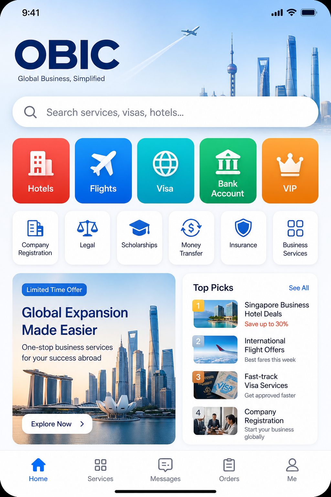
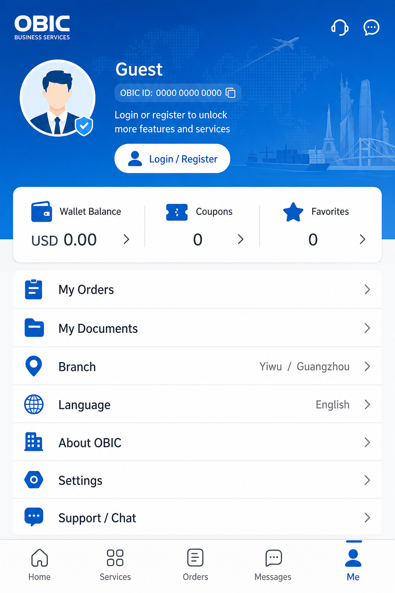

Build one mobile app for iOS and Android so international clients can discover, request, track, and communicate about OBIC China corporate/travel services — look & density inspired by Ctrip (携程) Chinese app, branded as OBIC. Arabic is the main/default language with full RTL; English available via in-app switch. Designed & developed by Ali.
| In V1 | Out of V1 (later) |
|---|---|
|
Home (search, 3D tiles, banners, floating promos) All 16 services as entries Service detail + request form Auth: phone + email register/login, guest browse Orders list + status timeline Messages + chat with images & files Voice / video / incoming call UI (glass overlays) OBIC AI floating assist + keyword auto-replies Register / Login with Email or Phone tabs Discreet Staff entry → Staff Login Admin App (mobile) + Admin Web (desktop) Roles: Super Admin vs Employee privileges Moments feed (admin notify-all / user silent) Customer add-friend (phone / ID / QR) Super Admin employee chat oversight Employee cannot add customers as friends Arabic ↔ English i18n (default ar + RTL) Me / About / branch · Designed by Ali 5 bottom tabs (Home · Services · Moments · Messages · Me) |
Live WebRTC media servers (calls are UX-ready) Full ERP / task trees / KPI boards Live flight/hotel inventory APIs Wallet, agents, money transfer execution All payment gateways (Stripe/Visa in phase 3) Additional languages beyond AR/EN |
| Tab | Purpose |
|---|---|
| Home | Search, primary tiles, promos, recommended · language chip · notification bell |
| Services | Full catalog grid |
| Moments | 朋友圈-style feed · admin posts notify all · user posts silent |
| Messages | Support · OBIC AI · friends · system |
| Me | Profile, login, friends, language AR/EN, About, Staff mark |
Orders remain reachable from Me and service flows (list + timeline screens still in prototype).
Hotels · Flights · Visa · Bank Account · VIP · Legal · Company Registration · Scholarships · Money Transfer (request/info only in V1) · Advertisements · Business Services · HR · Insurance · International Expansion · Technical Support · Business Planning
| Phase | Deliverable |
|---|---|
| Month 1 — V1 customer app | UI + auth + services + orders + chat (files/images) + call UI · TestFlight / internal Android |
| Month 2 | Admin web · Push · wire real chat media upload · call signaling stub |
| Month 3 | Card payments (Stripe/Visa) · i18n start · live WebRTC if approved · store submission |
| Later | ERP workflows · inventory APIs · transfers |
| Layer | Recommendation |
|---|---|
| Mobile | Flutter or React Native (Expo) — pick one team skill |
| API | NestJS or Laravel + PostgreSQL |
| Auth | JWT + SMS OTP + email |
| Admin | Next.js or Flutter web |
| Payments (later) | Stripe for international cards |
| Chat + media | WebSocket / Stream Chat · file & image upload |
| Calls (later wire) | WebRTC or Agora / Twilio — UX already in prototype |
Interactive HTML prototype path: prototype/index.html (open in Chrome).
Screen map covered:
Brand, search, 5 primary tiles, secondary grid, VIP banner, promos, recommended list
Full 16-service catalog
Hero, inclusions, price, Request / Chat CTAs
Branch, name, phone, email, notes → submit
List with status badges
Step progress + message advisor
Support · OBIC AI · Friends · system
Text, image, file, voice & video call
Voice · Video · Incoming
Feed · Admin notify-all · User silent
Badge + list (admin Moments)
Add by phone/ID/QR · requests · list
Language AR/EN · friends · Ali credit
Login + Register Email | Phone + OTP
Hot keywords + results
Brand, branches, Staff mark, Ali
Keyword assist AR/EN
Hidden entry · Super/Employee toggle
Dash · orders · staff · oversight · transcript · add contact
Dashboard · staff · chat oversight
| Role | Can do | Cannot do |
|---|---|---|
| Super Admin | Full modules · promote staff · grant privileges · system settings · employee chat oversight · add customers as contacts · “Signed by Super Admin” | — |
| Employee / Staff | Orders · chat with assigned customers | Promote others · system settings · see other employees’ private chats · add customers as friends/contacts |
| Customer | Services · orders · chat · Moments · add other customers as friends | Staff modules · oversight |
Staff entry is discreet (small “O · Staff” mark on Me / About) — not a customer CTA. Admin exists in both the mobile app (staff mode) and a desktop Admin Web layout in the same prototype (toggle).


Left: Home concept · Right: Me / profile concept (Ctrip-inspired OBIC brand)
prototype/index.html in Chrome — click left nav or in-phone tabs